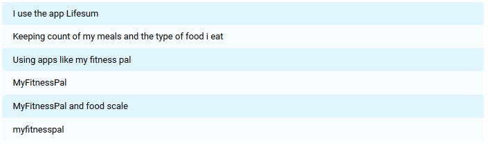

Project Component #1: User Research
Project Idea
Our project idea is the redesign a system we built in our database class. The purpose of the system is an all in one fitness progression tracking application. The application is meant to work in tandem with our database so that a user can create meal plans and add foods to these meal plans based on their macro nutritional/calorie goals. In addition to this, the application also allows the users to create workout routines, and keep track of the weights they use or the number of repetitions achieved for that workout.
We expect our system to be used in a number of different ways. An important functionality for our system is the ability to create meal plans and track food consumption. The average user would be able to input their statistics (height, weight, etc) as well as their goals, and receive the information they require to reach their goals. This can include things like daily calorie limits or macro nutrient goals. In addition to this, users will be able to create workout routines as well as log their weight/repetitions as they complete each exercise in their routine. This allows our users to visually see their progression over time. Lastly, users should be able to do lookups into both the food and exercise database. A user could search the foods database to find new foods that fit their needs, or to log food they consume throughout the day. Similarly, a user could use the exercise database to search up new exercise by body part or by the equipment they have available. This allows users to have greater flexibility with their routines.
Our typical user is meant to be anyone with a phone or computer who wishes to either track their progress, or plan ahead with regards to fitness and health. The only knowledge required to use the application is basic knowledge of phone and web page navigation.
Our target context is ideally both mobile and web-based. The app’s availability on mobile means that users can track on the go, specially since most of the people have smartphones nowadays. The ability to look up macronutrients whilst deciding on what to eat as well as tracking these is a huge selling point, and the same goes for the workout aspect of the app. Having our app available as a website introduces continuity. Users would be able to view their progression on a much larger screen, with a more detailed information provided. This would also allow users to be able to create meal plans and workout routines much more efficiently.
Stakeholders
Research Methods
Method #1: Fly on the Wall
Method #2: Survey and Questionnaires
This method allowed us to further conduct research not observable by the fly on the wall method. It allowed us to ask and interact with individuals who use the gym, track progression, or log nutrition. The following images show the results of our survey and questionnaire.
Gym Related Question
Do you go to the gym regularly? (at least 2-3 times a week)

Gym Related Question
What about your gym progression do you keep track of?

When asked about what aspect of training our prospective users are most concerned about, we observe that there is a reasonably even split between strength, physique, and endurance. What this might mean is that the needs of gym goers are incredibly diverse and that there is a possible need for an all in one solution.
When asked how our prospective users track their gym progression, it became more apparent how fragmented the market for fitness solutions is. A number of respondents reported using the app ‘Progression’. As well, others reported simply benchmarking their workouts. In contrast to this, some respondents report using visuals such as photos or simply a mirror to track their progress. Lastly, some reported simply using a weighing scale at regular intervals.
Gym Related Question
If at all, how do you track gym progression? (Responses recorded below)

Gym Related Question
What are the things you like about your current method of tracking gym progression?
Gym Related Question
What are the things you dislike about your current method of tracking gym progression?

Food Related Question
How conscious are you about your food intake?

Food Related Question
What about your food intake do you keep track of?
When the same respondents were asked about their consciousness regarding their food intake, (1 being completely unaware and 5 being extremely health conscious) we observe that the majority of users are at least somewhat mindful about their diets. This is significant because this signals to us that, at least from our sample, most people who are mindful about the exercise aspect of fitness are also aware of the importance of a balanced diet. Thus, perhaps there be a need for an application that combines these aspects of fitness.
When asked about what aspect of nutrition our respondents keeps track of, the major aspects were calorie count and macronutrients. As avid gym goers ourselves, this result was somewhat expected since this mirrors our own sentiments. The next largest group was the N/A group, followed by ‘Other’ and ‘Vitamins/Nutritional Value’. One reason for this could be because of the distribution of 3’s in the above bar graph. Perhaps there are users who are mindful of what they eat, but not to the extent of empirically keeping track of their food consumption
In short, what our survey tells us is that there is a market for an all in one fitness application that combines training and nutrition. However, what it also tells us is that, not all gym goers are avid dieters, and vice versa. Thus, this could mean an optimal solution is one built modularly so that users can use the training functionalities, or the nutrition functionalities, or both.
Food Related Question
If at all, how do you track your food intake?

Food Related Question
What are the things you like about your current method of tracking food intake?

Food Related Question
What are the things you dislike about your current method of tracking food intake?

Research Conclusions